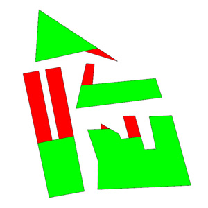

convexify
Synopsis
convexify()
convexify(float maxLength)
Parameters
- maxLength
Maximum length of the split line which splits concave polygons into subpolygons. If not provided, no limit is applied, i.e. all resulting polygons are convex.
This function splits a concave polygon into a number of convex polygons. If a maxLength parameter is provided, only split lines shorter than this value are applied and one of the resulting polygons might still be concave.
Related
- cleanupGeometry operation
- innerRectangle operation
- mirror operation
- reduceGeometry operation
- reverseNormals operation
- setNormals operation
- trim operation
Examples
attr maxLength = 1
Lot -->
convexify(maxLength)
comp(f){all: SubShapes}
SubShapes -->
case scope.sx >= maxLength && scope.sy >= maxLength :
color("#00ff00")
else:
color("#ff0000")
Initial shapes: Generated shapes:
Copyright ©2008-2016 Esri R&D Center Zurich. All rights reserved.